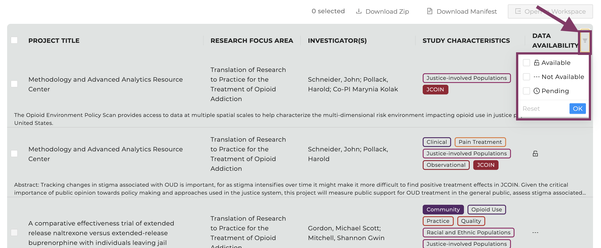
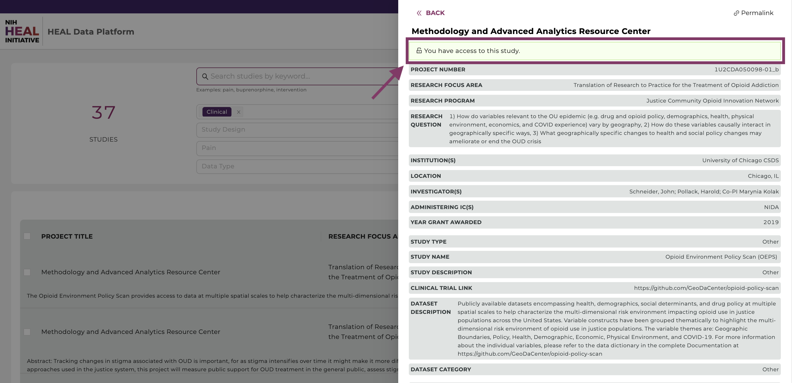
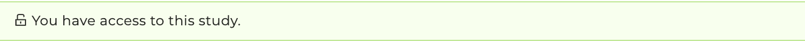
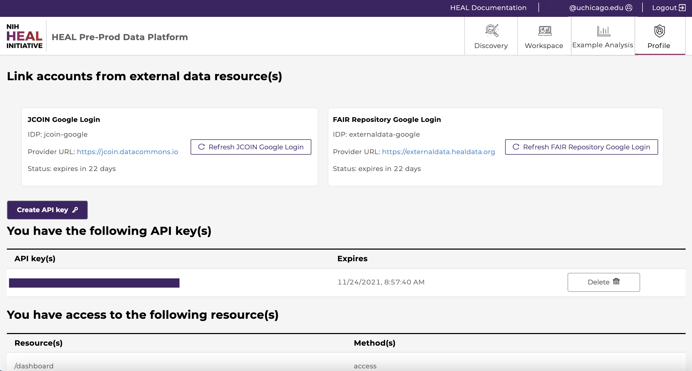
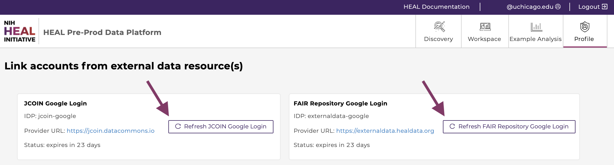
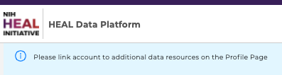
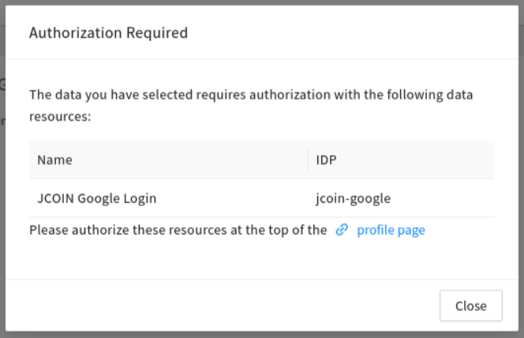

c) How to check and request access###
Users can find out to which projects they have access to by navigating to the Discovery Page and by selecting “Data Availability" - "Available" - ”OK” as shown below.

Available data can be found when the box next to "Available" is selected.
Access to individual Studies###
You can check access by clicking on a study in the Discovery Page, as shown below:

The Study Page will display access permissions in the top right corner. Click the “Permalink” button in the upper right to copy the link to the clipboard.
If you have access, a green box will show “You have access to this study”.

Access is displayed as a yellow box on top of each Study Page.
Current (open-access) studies###
Current open-access studies will be shown when navigating to the Discovery Page.
Users can download and/or export open-access study files after logging in. Currently, the HEAL Platform hosts the following studies. All are open-access except when noted.
Note, that different studies relate to different Data Resources.
Project number
Study Name
Data Resource
57b45d83d6c9e7e8693ccdfd
Naloxone Overdose Prevention Laws
PDAPS
10.3886/ICPSR34945.v3
National Mental Health Services Survey (N-MHSS)
ICPSR
1U24AR076730-01
A synthetic dataset from the Back Pain Consortium (BACPAC) Research Program Data Integration, Algorithm Development and Operations Management Center
HEAL
10.3886/ICPSR04256.v5
National Survey of Substance Abuse Treatment Services (N-SSATS)
ICPSR
cdcwonder
CDC Wide-ranging Online Data for Epidemiologic Research (CDC WONDER) Mortality Multiple Cause-of-Death Public Use Record
HEAL
10.3886/ICPSR30122.v5
Treatment Episode Data Set: Discharges (TEDS-D)
ICPSR
deaarcos1
Drug Enforcement Administration Controlled Substances Tracking (DEA ARCOS)
HEAL
a) 1U2CDA050098-01_a
b) 1U2CDA050098-01_b
JCOIN - Methodology and Advanced Analytics Resource Center:
a) JCOIN 026: Amerispeak Brief Stigma Survey
b) The Opioid Environment Policy Scan
JCOIN
Overview of access to Datasets and Studies###
Users can visit the "Profile” page to view a list of studies they have access to under the “You have access to the following project(s)” section, as shown in the figure below.

A user can view their study access in the Profile Page.
From here users can also view current API keys or create and download new keys. API keys are required for downloads which require use of the Gen3-client. More information in the chapter “Downloading Data Files”.

API keys can be viewed, created, and downloaded on the Profile Page.
From here users can also view if they have access to projects or workspaces
- /dictionary_page: You have access to the data dictionary.
- /workspace: You have access to the workspace.
- /programs/open: You have access to open-access projects.
Linking access to FAIR enabled repositories###
The HEAL Platform securely exposes data stored on multiple HEAL-approved FAIR repositories.
Users need to link their account to currently all FAIR repositories in order to:
- run Jupyter Notebooks that utilize data stored on various FAIR repositories.
- export data that is stored on FAIR repositories from the Discovery Page to the Workspaces.
- download data that is stored on FAIR repositories from the Discovery Page.
In order to link the account to the involved FAIR repositories, navigate to the Profile Page and link the account to all current login options by clicking on the "Refresh [..] Google Login" buttons as shown below.

Linking access options on the Profile Page for data stored on FAIR enabled repositories.
Access needs to be renewed after 30 days, as indicated after "Status: expires in [..] days".
As a reminder, users will be prompted with a banner on healdata.org/workspace and a pop-up window on healdata.org/discovery.

Users are reminded on healdata.org/workspace to link the account to all other FAIR enabled repositories on the Profile Page.

Users are reminded on the Discovery Page to link the account to all other FAIR enabled repositories.